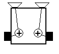
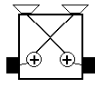
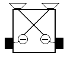
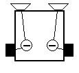

|  |  |  |  |
| Félénk | Agresszív | Felfedezõ | Szeretetteli |
boolean StepRobot(struct Robot *robot)
{
if ((robot->IRSensor[0].DistanceValue > THRESHOLD) ||
(robot->IRSensor[1].DistanceValue > THRESHOLD) ||
(robot->IRSensor[2].DistanceValue > THRESHOLD)) {
/* ütközés bal oldalon, fordulj jobbra */
robot->Motor[LEFT].Value = TURN_SPEED;
robot->Motor[RIGHT].Value = -TURN_SPEED;
} else if ((robot->IRSensor[3].DistanceValue > THRESHOLD) ||
(robot->IRSensor[4].DistanceValue > THRESHOLD) ||
(robot->IRSensor[5].DistanceValue > THRESHOLD)) {
/* ütközés jobb oldalon, fordulja balra */
robot->Motor[LEFT].Value = -TURN_SPEED;
robot->Motor[RIGHT].Value = TURN_SPEED;
} else {
/* egyébként menj egyenesen */
robot->Motor[LEFT].Value = FORWARD_SPEED;
robot->Motor[RIGHT].Value = FORWARD_SPEED;
}
return(TRUE);
}